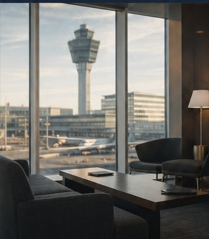

Executive Leadership | Business Strategy | Asset Management
Executive Leadership for Complex Operations, Strategic Assets & Organisational Transformation
Helping organisations strengthen operations, optimise assets and build high-performing teams through strategic leadership, technical excellence and responsible decision-making.

Creating stronger organisations through leadership, strategy and execution.
For more than two decades, I have helped international hospitality organisations strengthen operations, optimise technical assets and lead organisational transformation. My approach combines strategic thinking with operational discipline, enabling businesses to improve performance, create long-term value and build cultures where people and organisations succeed together.
Whether leading complex airport hotels, overseeing major technical assets or guiding multidisciplinary teams, my focus has remained consistent: understand the business, build trust, simplify complexity and leave every organisation stronger than I found it.
What I Bring
Executive Leadership
Building high-performing teams through trust, accountability and clear direction.
Business Strategy
Aligning operational decisions with long-term commercial objectives.
Asset Management
Protecting and increasing the value of complex technical and operational assets.
Technical Excellence
Delivering reliable, safe and resilient environments through modern technology and disciplined operations.
Transformation
Leading change with structure, transparency and measurable results.
The Framework
My leadership philosophy is built on five principles that have guided every organisation, project and team I have led. They define how I make decisions, approach challenges and create sustainable business value.
Discover the Five Pillars →Executive Portfolio
A career built across international hospitality, large-scale operations and complex technical environments.
- 20+ years of international leadership
- Executive leadership across six countries
- Airport hotels and convention centres
- Organisational transformation
- Strategic asset management
- Technology & digital innovation
- CAPEX and operational excellence
- International teams and stakeholder leadership
Let's Start a Conversation
Every organisation has unique challenges, ambitions and opportunities.
If you're looking for an executive leader who combines strategic thinking with operational execution, I'd welcome the opportunity to connect and discuss how I can contribute to your organisation's future.
Contact Alexander